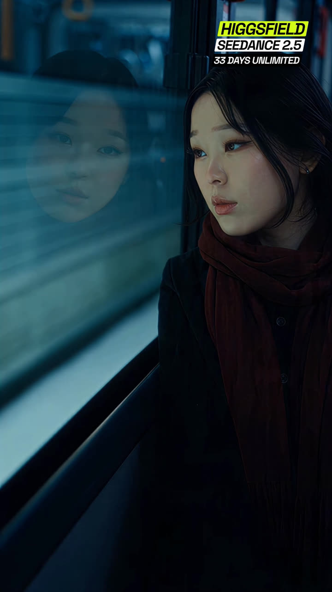
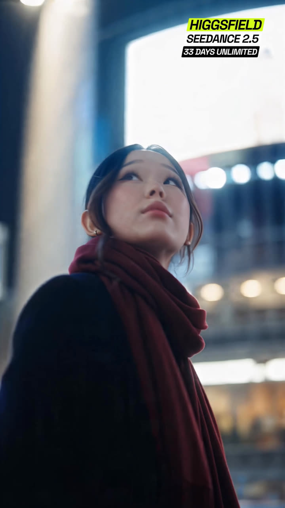
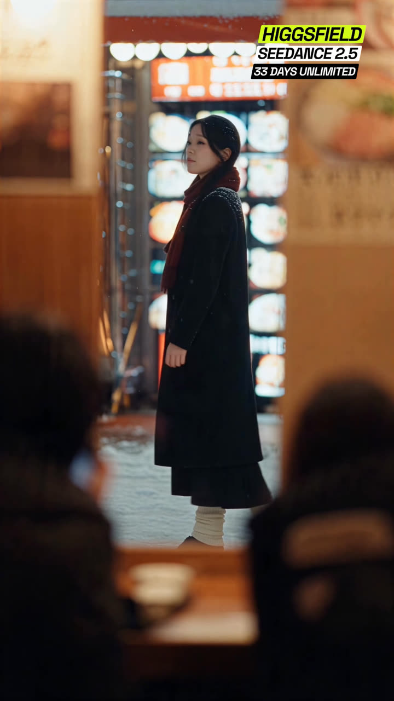
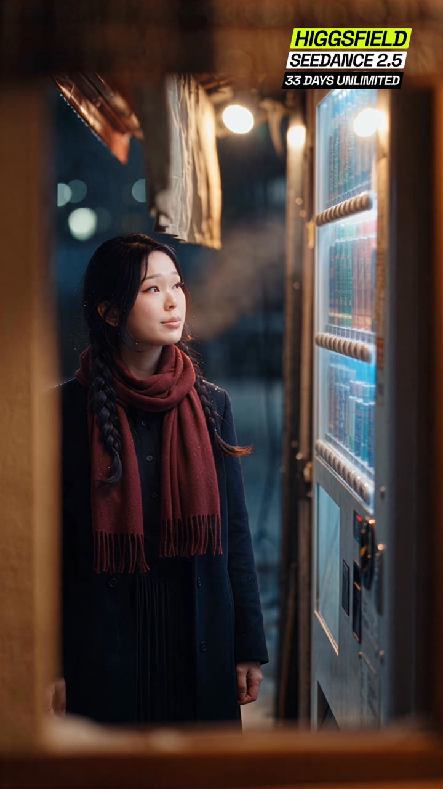
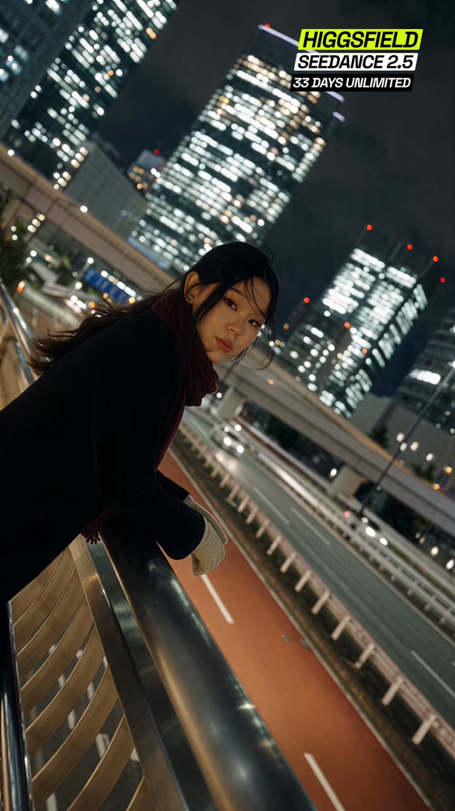
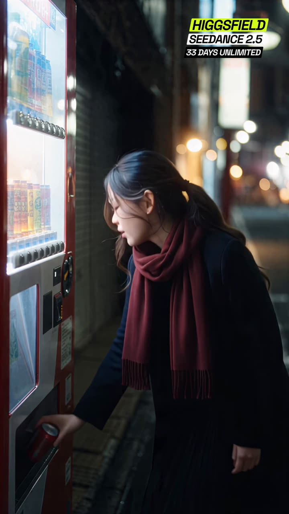
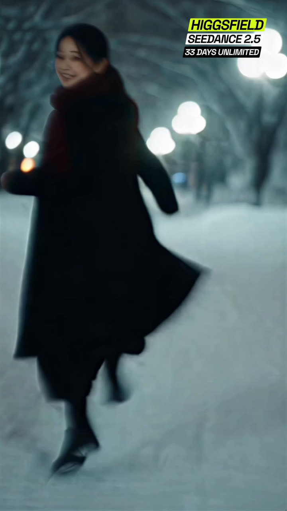
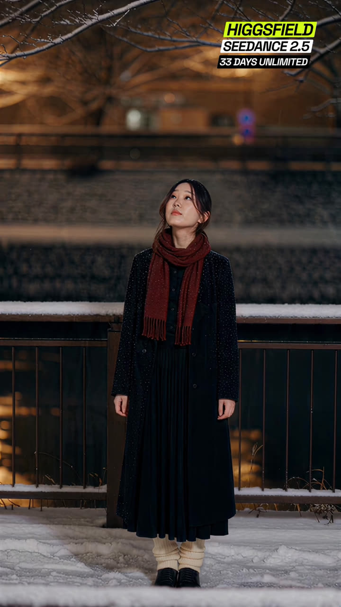
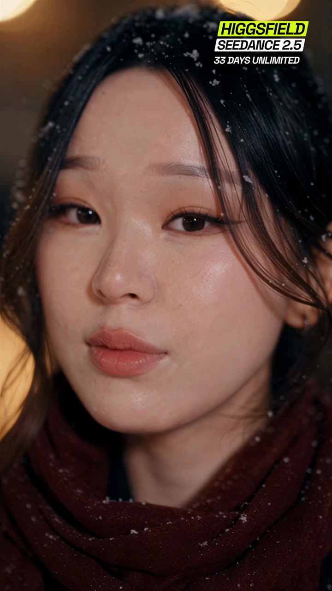
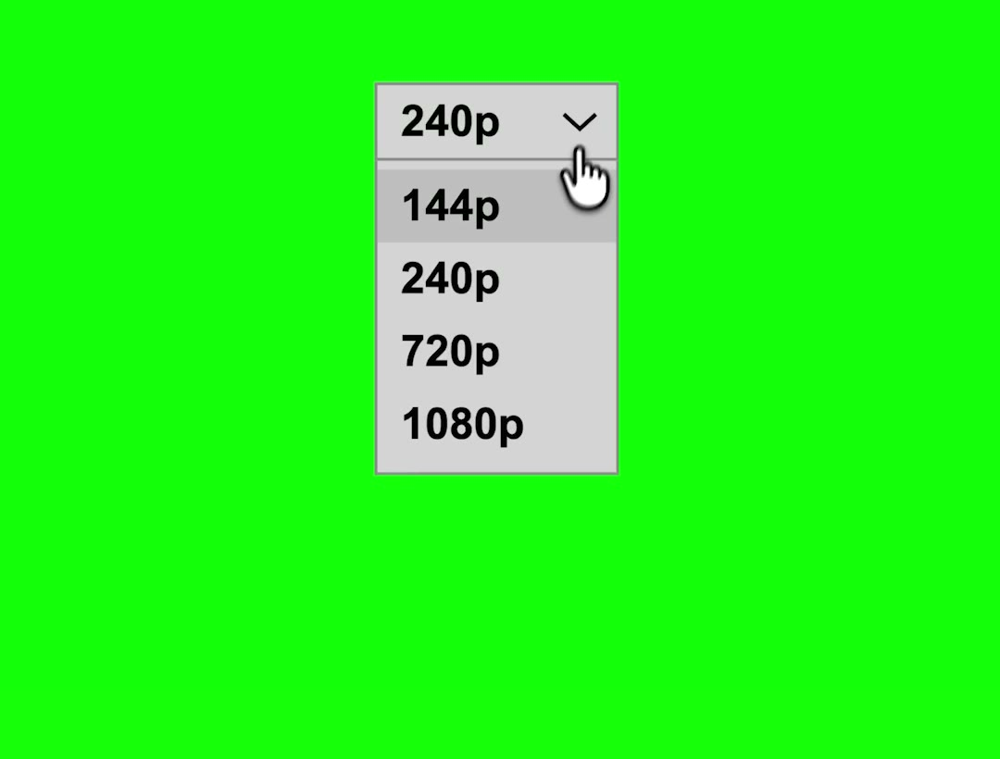

Two layers, one video:
Two engines do the work, both inside Higgsfield. Soul 2.0 locks your face so you look like you in every frame, and Seedance 2.5 turns a written scene into a real cinematic shot. Lock your character once, write each shot, and it films it.
The hardest part of any AI film is staying the same person across every shot. Higgsfield gives you two ways to lock it, and knowing the difference is the whole game.
@character pins your face, @style borrows a look from a film still, @motion copies the movement of a clip, @audio drives lip-sync or ambience. Scope each one ("use this image for the face only, not its background") so it does not drag in extra people or scenery.Every AI generation is a blank slate. The model has zero memory of the shot you made two minutes ago, so if you describe your character loosely, you get a different woman in every scene. The fix is a lock block: one paragraph stack that pins the face, the wardrobe, the performance, the grade and the lens, pasted at the top of every single shot prompt, word for word. That repetition is what holds five separate generations together as one film.
CHARACTER LOCK: One woman throughout, matching the attached reference image exactly - same facial
structure, eyes, nose, lips, skin tone, hairstyle, length, colour and parting. Never restyle her hair.
Her face must stay stable, sharp and undistorted in every frame, with no warping or morphing between
shots. Keep the face slim and defined; do not let the model round or soften it, as it tends to drift
toward a softer, younger shape.
WARDROBE LOCK: Identical in every shot. Long unbuttoned charcoal-black wool overcoat to mid-calf. Deep
crimson-red wool scarf wound twice around her neck, one long tail down her front. Black pleated
ankle-length skirt. Cream ribbed socks. Flat black loafers.
PERFORMANCE LOCK: Calm, restrained, melancholic, elegant. She looks like she is remembering something.
Never grin, laugh, pout, point, wave or pose for the camera. Never playful, cute or exaggerated. Emotion
lives in stillness - heavy eyes, slow blinks, a quiet steady gaze. Whenever her face is visible it is
three-quarter or frontal with both eyes visible; never a pure side profile.
GRADE LOCK: Pushed 35mm film stock. Strong halation - every bright practical light bleeds a soft warm
red-orange glow around it, highlights bloom rather than clip. Blacks lifted and milky, faintly
cyan-green, never crushed. Low contrast, gentle S-curve, visible organic film grain heaviest in the
shadows. Cold cyan and petrol-blue ambient, but her face always catches a separate warm 2800K practical
so her skin stays warm and alive, never blue. The crimson scarf is the strongest chroma point in every
frame.
LENS LOCK: 2x anamorphic. Wide oval bokeh, pronounced horizontal blue streak flares across bright
practicals, visible barrel distortion at frame edges, soft corner falloff, shallow depth of field.
Vertical 9:16. Every shot is at night.The model reacts to what it can see and measure, not to mood words. "Cinematic", "epic" and "aesthetic" do almost nothing. Translate every one into a physical instruction: a light direction, a lens behaviour, a movement at a stated speed. Build each shot in this order.
Here is a full scene prompt built that way, ready to paste. Swap Tokyo for any world (a rainy Paris street, a desert highway, a spaceship corridor); keep the one continuous take and the slow camera and it stays cinematic.
[Reference: my saved Soul character, hair up] A young woman in an oversized cream trench coat walks slowly through a narrow Tokyo backstreet at night, neon signs glowing pink and blue on wet pavement, steam rising from a ramen stall behind her. She keeps walking toward camera, hands in pockets, glancing to the side once. Slow low dolly-back tracking shot, eye-level, shallow depth of field, 35mm cinematic look, gentle handheld sway. Cool night light with warm neon spill, light rain, reflections everywhere. Filmic grain, moody and cinematic, no text. One continuous shot, the camera does not cut on its own. 6 seconds.Run each one as its own Seedance 2.5 generation in Higgsfield: attach your reference image, paste the lock block, then the shot prompt under it. Each shot is 4 to 5 seconds. The frame next to every prompt is the actual shot from my reel, so you can see exactly what you're aiming for; you can even attach that frame as an extra composition reference alongside your own photo.
The arc matters: she stays quiet and inward for seven shots, and only two shots at the end are allowed to smile. That restraint is what makes the ending land.

MEDIUM CLOSE-UP, three-quarter. Night train interior. She sits by the window on the right of the
vertical frame, body angled toward the glass, the crimson scarf filling the lower frame. Her
reflection floats in the dark glass on the left of frame, softer and dimmer than her real face, the
two faces sharing the frame. Outside the window the city slides past as long horizontal cyan and
teal smears, halating softly. Cool petrol-blue ambient fills the carriage while a warm ceiling
practical keeps her skin warm and alive. She watches the city glide by, eyes soft and unfocused,
lips closed, somewhere else entirely; at 2s she blinks once, slow and heavy, and her gaze drifts a
few degrees to follow a passing light. Locked camera, 40mm anamorphic, faint carriage vibration.
One continuous shot, the camera does not cut on its own. 4 seconds.
LOW-ANGLE MEDIUM CLOSE-UP from below chest height, camera looking up at her against the towers. She
stands in a city plaza at night, a huge bright LED screen glowing white-blue high behind her right
shoulder, dense lit buildings dissolving into large soft oval bokeh all around. Her chin is lifted
and she looks up and around at the glowing signs, eyes tracking slowly from one screen to the next,
lips softly closed, quiet wonder held small. The camera arcs around her at walking pace, 3 km/h, a
single smooth orbital move that keeps her face three-quarter with both eyes visible while the
skyline wheels behind her. Cold cyan ambient, one warm streetlight catching her cheek so her skin
stays warm. 35mm anamorphic, shallow depth, halation blooming off every screen. One continuous
shot, the camera does not cut on its own. 5 seconds.
MEDIUM WIDE, filmed from INSIDE a warm ramen shop looking out through the window. Foreground: the
dark out-of-focus heads and shoulders of two seated diners frame the lower left and lower right
edges, a wooden counter with bowls between them, the whole interior washed in warm amber. Through
the glass she walks slowly right to left along the snowy alley outside, full figure, passing a wall
of glowing menu lightboxes and red lanterns, snow settled on her shoulders and hair, fresh flakes
falling steadily. She moves at an unhurried stroll, eyes ahead, calm, remembering something; at
2.5s her head turns a few degrees toward the warm window light without breaking stride. Locked
camera, 50mm anamorphic. Warm interior glow against the cold blue street. One continuous shot, the
camera does not cut on its own. 4 seconds.
MEDIUM CLOSE-UP, night. She stands before a tall glowing drinks vending machine that fills the
right third of the vertical frame, its pale blue light washing the near side of her face, a single
warm bulb glowing above her. The shot is framed through a dark opening, blurred warm wood
vignetting the frame edges, like the camera is watching from the doorway across the lane. Her face
lifts toward the machine's glow and at 1.5s she exhales a long sigh, the breath rising as slow
visible steam through the cold air, her shoulders dropping a centimetre as it leaves her. Eyes
heavy, somewhere else; at 3s one slow blink. Locked camera with faint handheld drift, 85mm
anamorphic, shallow depth. Cool blue machine light against warm tungsten above. One continuous
shot, the camera does not cut on its own. 4 seconds.
MEDIUM SHOT, STRONG DUTCH ANGLE, frame canted 30 degrees. She leans on the curved steel railing of
a pedestrian overpass at night, both forearms flat along the rail, weight settled and easy, cream
gloves on her hands. Behind and below her an elevated roadway with an orange-red surface sweeps a
long diagonal through frame, headlights smearing into halating trails; the skyline rises as dense
towers of lit windows dissolving into bokeh. Her face is three-quarter to camera and she looks
directly into the lens, calm and level, holding eye contact for the entire shot; at 2s the wind
moves a strand of hair across her cheek and she lets it stay; at 3.5s the faintest softening
arrives around her eyes, almost a smile that never lands. Slow handheld drift, 35mm anamorphic. One
continuous shot, the camera does not cut on its own. 4 seconds.
MEDIUM SHOT from her side, three-quarter, night alley. A bright red vending machine glows on the
left of frame, its white interior light spilling across her. She is bent at the waist toward the
dispenser flap, one hand closing around a cold red can inside it; at 1.8s she straightens back up
to standing in one smooth unhurried motion, the can in her hand, scarf and hair swinging softly
with the movement, and she turns the can once to read it. Behind her the alley falls away into
warm orange lantern bokeh and cool blue shadow, light snow drifting through the streetlight beams.
Locked camera, 50mm anamorphic, shallow depth. One continuous shot, the camera does not cut on its
own. 4 seconds.
MEDIUM WIDE, HANDHELD, chasing her at a jog. Night snowfall on an empty tree-lined path, cold
white-blue lamps glowing as soft orbs down the avenue, snow-heavy branches arching overhead, the
whole frame cool cyan. She runs ahead of the camera through fresh snow, coat and pleated skirt
swinging hard with each stride, the crimson scarf tail flying; the camera bounces with live
handheld shake and lags half a beat behind her, the lamps streaking with motion blur. At 2.5s she
looks back over her shoulder at the lens without slowing and breaks into a real unguarded smile,
the one the whole film has been holding back, hair whipping across her face, and keeps running.
Everyone and everything moves at natural real-time speed. 35mm anamorphic. One continuous shot,
the camera does not cut on its own. 5 seconds.
WIDE FULL-BODY, locked camera. She stands centered on a snow-covered walkway beside a dark iron
railing, a stone canal wall glowing warm amber behind her, bare snow-dusted branches reaching
across the top of frame. Snow falls steadily through the shot. She stands completely still, weight
even, hands resting at her sides, and looks up into the branches, chin lifted, watching the snow
come down; at 3s her gaze slides slowly back down to the ground in front of her, lashes lowering,
the thought landing. Cream ribbed socks bunched over black shoes, the crimson scarf the only strong
colour in frame. Warm sodium glow against cold blue snow. 40mm anamorphic. One continuous shot,
the camera does not cut on its own. 5 seconds.
EXTREME CLOSE-UP on her face, night. Snowflakes rest unmelted in her dark hair and on the crimson
scarf wound up to her chin; large warm golden bokeh orbs float in the darkness behind her. Her
skin detail is crisp and alive, a warm 2800K key on her face against the cool night. She looks
just past the lens, eyes heavy and quiet; at 1.5s her eyes come to the lens and hold; at 2.5s a
small sweet smile arrives, soft and real, barely more than the corners of her mouth lifting and a
light coming into her eyes, and she holds it gently to the end of the shot. Locked camera with
breath-slow drift, 85mm anamorphic, shallow depth. One continuous shot, the camera does not cut on
its own. 4 seconds.This is the hook of the whole video: it opens looking like it's buffering at 144p, then the quality "loads" up step by step into your real footage. You build it by rebuilding your opening shot as pixel art at two coarseness levels, stills first, then video.
Redraw this image as the SAME pixel-art scene at ONE small quality step lower - like the
same picture shown at 240p instead of 360p on YouTube. It must stay clearly recognizable:
[YOUR SUBJECT] and the key background elements are all still obvious. This is a subtle
reduction, NOT a heavy pixelation.
WHAT CHANGES (keep it gentle): pixels get modestly larger, roughly 1.3 times bigger blocks -
no more than that. Slightly fewer colors and a touch less fine detail. Merge only the very
smallest details into their neighbors. Everything else stays intact and readable.
WHAT STAYS THE SAME: identical composition and framing, same colors and lighting as the
input, [YOUR SUBJECT] in the same position, same background elements ([LIST YOUR BACKGROUND,
e.g. "trees, buildings, sky"]). Same mood as the input.
STYLE: keep it clean flat pixel-art on a uniform grid - solid color blocks, hard clean edges,
no painterly shading, no gradients. Just a slightly coarser version of the input's own style.
SUBJECT: [DESCRIBE YOUR SUBJECT - its color, shape, and any defining feature that must NOT
change. If it includes text, a face, or a license plate, say it should stay blank/unreadable.]
DO NOT: over-pixelate, go 8-bit or retro, make it blocky or abstract, lose recognizable
shapes, blur, smudge, add gradients, change colors or lighting, or alter your subject's
defining features. A subtle, clean, slightly-lower-res version only. Match your original
aspect ratio.Redraw this photo entirely as a CLEAN pixel-art video game render - the crisp, flat
cel-shaded look of a stylized mobile game screenshot. This is a full re-illustration, NOT a
filter, blur, or downscale. Rebuild every element from crisp, hard-edged square pixels on a
strictly UNIFORM grid - every pixel the same square size.
STYLE: flat solid single-color fills with clean cel-shaded blocks - no painterly shading, no
gradients inside shapes, no photographic texture. Bold simple shapes like game assets. Crisp
and clean.
COLOR AND LIGHT (IMPORTANT): match the ORIGINAL photo's colors and lighting faithfully -
[DESCRIBE YOUR LIGHTING, e.g. "golden-hour sunlight", "overcast daylight", "neon night
lighting"]. Translate these exact colors into flat pixel blocks. Do NOT brighten it into
midday, do NOT make it dark or moody either - the same mood as the photo, just rendered as
clean pixel art.
KEEP THE SAME: exact composition and framing, [YOUR SUBJECT] in the same position, [DESCRIBE
YOUR BACKGROUND LAYOUT - what's left, right, and behind your subject].
SUBJECT: [DESCRIBE YOUR SUBJECT'S DEFINING FEATURES AND WHAT MUST NOT CHANGE.]
TEXT / FACES / PLATES (if relevant): keep any readable text, license plates, or faces blank
or unrecognizable - no readable letters, numbers, or identifying detail.
PIXEL SCALE: a fine, crisp, clean uniform grid - detailed but obviously an illustrated game
render, not a photo. Match your original aspect ratio.
DO NOT: overbrighten into midday, use dark GTA-style moody shading, painterly brushwork, soft
gradients, blur, film grain, mixed pixel sizes, or a muddy grid. Do NOT alter your subject's
defining features. No readable plate/text, no watermarks, no UI overlays.Completely REDRAW this footage as authentic retro video-game PIXEL ART, in the style of
an early 1990s console game (NES / Game Boy Color / early Super Nintendo, like Mega Man or
Street Fighter II). Video 1 controls ALL motion, camera movement, timing and composition -
keep them EXACTLY; only the rendering style changes. The ENTIRE frame must sit on ONE uniform,
coarse square-pixel grid - background, [YOUR SUBJECT], and the setting all rendered at the
same large pixel size. Big chunky visible square pixels. Hard-edged flat color blocks with a
small limited palette (roughly 16 colors), ordered dithering for any gradient, thick clean
outlines, no smooth gradients, NO blur, NO soft edges, NO painterly brush texture. Crisp
sprite look. Redraw [YOUR SUBJECT] cleanly as a game sprite at the same pixel size as
everything else, keeping its defining features ([DESCRIBE, e.g. "stays dark, never green"]).
Keep the same lighting and layout as the source. Do NOT add characters, text, HUD, or UI.
Ignore the source audio.Completely REDRAW this footage as authentic 16-bit Super Nintendo PIXEL ART (SNES /
Neo Geo era, like Street Fighter II or Metal Slug). Video 1 controls ALL motion, camera
movement, timing and composition - keep them EXACTLY; only the rendering style changes. The
ENTIRE frame must sit on ONE uniform square-pixel grid - background, [YOUR SUBJECT], and the
setting all at the same pixel size. Clearly visible square pixels, but slightly finer and with
a richer (but still limited) palette than 8-bit. Hard-edged flat color blocks, light dithering,
clean outlines, crisp sprite detail, NO blur, NO soft edges, NO painterly texture. Redraw
[YOUR SUBJECT] as a clean sprite at the same pixel size as the scene, keeping its defining
features ([DESCRIBE, e.g. "stays dark, never green"]). Keep the same lighting and layout as
the source. More detail and depth than 8-bit but still an obvious retro pixel-art sprite
scene, not photoreal. Do NOT add characters, text, HUD, or UI. Ignore the source audio.The thing that sells the illusion: a YouTube-style quality dropdown that clicks from 144p up through 240p and 720p to 1080p, on a solid green background. This is the exact overlay from my edit, yours to download:

A 6-second 1080x1920 clip: the menu opens, the cursor picks a quality, the menu closes.
📥 Download the menu green screen (MP4, 0.6 MB)
🎥 Higgsfield (Soul 2.0 + Seedance 2.5 live here): higgsfield.ai
🤖 Claude (your prompt enhancer, a rough idea into a full scene prompt): claude.ai
👾 ChatGPT (GPT Image 2 for the pixel stills): chatgpt.com
✂️ CapCut (free, for the edit + chroma key): capcut.com
📼 The quality-menu green screen: download the MP4
Build AI systems with me through recorded lessons you can follow at your own pace. Join the waitlist for first access and the founding price.